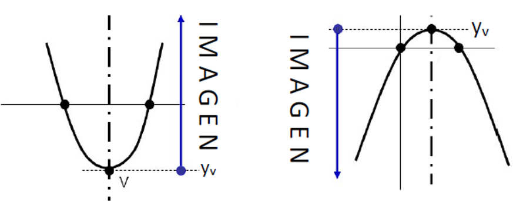

Una función cuyo gráfico ya no es una recta
En este bloque estudiamos un nuevo tipo de función numérica. Su expresión tiene un término con \(x^2\), y su gráfico deja de ser una recta para convertirse en una curva.
Definición y forma general
Definición
Una función cuadrática es una función \(f:\mathbb{R}\to\mathbb{R}\), definida por \(f(x)=ax^2+bx+c\), donde \(a\), \(b\) y \(c\) son números reales constantes, y \(a\)≠\(0\).
| Término | Nombre | Coeficiente |
|---|---|---|
| \(ax^2\) | término cuadrático | \(a\): coeficiente principal |
| \(bx\) | término lineal | \(b\) |
| \(c\) | término independiente | — |
Ejemplo
Identificar los coeficientes de \(f(x)=3x^2-5x+2\) y de \(g(x)=-x^2+4\).
En \(f\): \(a=3\), \(b=-5\), \(c=2\).
Reescribiendo \(g(x)=-1x^2+0x+4\): \(a=-1\), \(b=0\), \(c=4\).
Dominio de la función cuadrática
La expresión \(ax^2+bx+c\) puede calcularse para cualquier número real \(x\): no hay ninguna operación (como una división o una raíz) que restrinja los valores posibles.
El gráfico de una función cuadrática
La parábola y su eje de simetría
Definición
El gráfico de una función cuadrática es una curva llamada parábola: una curva simétrica respecto de una recta vertical, llamada eje de simetría.
En el explorador que sigue, el eje de simetría es la línea discontinua: si doblaras el gráfico por esa recta, las dos ramas de la parábola coincidirían. Usalo para ver cómo cambia la curva al modificar \(a\), \(b\) y \(c\).
Concavidad
La concavidad indica hacia dónde se abre la parábola, y queda determinada por el signo del coeficiente principal \(a\).
| Signo de \(a\) | Concavidad | Se dice que la función tiene |
|---|---|---|
| \(a\gt0\) (positivo) | cóncava hacia arriba | un mínimo |
| \(a\lt0\) (negativo) | cóncava hacia abajo | un máximo |
Además, cuanto menor es \(|a|\), más abierta (más "ancha") es la parábola; cuanto mayor es \(|a|\), más cerrada.
\(a\gt0\): cóncavas hacia arriba
\(a\lt0\): cóncavas hacia abajo
Ejemplo
Determinar la concavidad de \(f(x)=2x^2-3x+1\) y de \(g(x)=-0{,}5x^2+x\).
\(f\): \(a=2\gt0\) → cóncava hacia arriba (tiene un mínimo).
\(g\): \(a=-0{,}5\lt0\) → cóncava hacia abajo (tiene un máximo).
Ordenada al origen, raíces, eje de simetría y vértice
Para representar y analizar una parábola conviene identificar algunos puntos y rectas que la caracterizan.
Ordenada al origen
La ordenada al origen es el valor que toma la función cuando \(x=0\):
La ordenada al origen coincide siempre con el término independiente \(c\). Por lo tanto, el gráfico interseca al eje \(y\) en el punto \((0;c)\).
Raíces
Definición
Las raíces (o ceros) de una función cuadrática son los valores de \(x\) para los cuales \(f(x)=0\). Para hallarlas se resuelve la ecuación de segundo grado \(ax^2+bx+c=0\).
Si \(x_1\) y \(x_2\) son raíces de la función, las intersecciones de la parábola con el eje \(x\) son los puntos \((x_1;0)\) y \((x_2;0)\).
Por factorización
Cuando la expresión permite aplicar directamente algún procedimiento conocido, se factoriza y se usa que si un producto es igual a cero, al menos uno de sus factores debe ser cero.
- 1Extraemos el factor común \(x\): \(x(x-4)=0\).
- 2Igualamos cada factor a cero: \(x=0\) o \(x-4=0\).
- 3Despejamos \(x\) en cada ecuación: \(x=0\) o \(x=4\).
- 1Reconocemos que \(9=3^2\): \(x^2-3^2=0\).
- 2Factorizamos e igualamos cada factor a cero: \((x-3)(x+3)=0\), entonces \(x-3=0\) o \(x+3=0\).
- 3Despejamos \(x\) en cada ecuación: \(x=3\) o \(x=-3\).
Con la fórmula general
Cuando la expresión no se factoriza fácilmente, se usa la fórmula general, válida para cualquier ecuación de segundo grado:
El discriminante y la cantidad de raíces
En la fórmula general, la expresión que está dentro de la raíz se llama discriminante y se representa con la letra griega \(\Delta\):
| Discriminante | ¿Qué ocurre en la fórmula? | Cantidad de raíces |
|---|---|---|
| \(\Delta\gt0\) | \(\sqrt{\Delta}\) es un número real positivo: los signos \(+\) y \(-\) producen dos resultados diferentes | dos raíces reales distintas |
| \(\Delta=0\) | \(\sqrt{\Delta}=0\): sumar o restar \(0\) produce el mismo resultado | una raíz real doble |
| \(\Delta\lt0\) | \(\sqrt{\Delta}\) no puede calcularse dentro de los números reales | ninguna raíz real |
\(\Delta\gt0\): dos raíces reales distintas
\(\Delta=0\): una raíz real doble
\(\Delta\lt0\): ninguna raíz real
- 1\(\Delta=(-5)^2-4\cdot1\cdot6=25-24=1\gt0\): dos raíces reales distintas.
- 2Aplicamos la fórmula general: \(x=\dfrac{5\pm\sqrt{1}}{2}=\dfrac{5\pm1}{2}\).
- 3Con el signo \(-\): \(x_1=\dfrac{5-1}{2}=\dfrac{4}{2}=2\).
- 4Con el signo \(+\): \(x_2=\dfrac{5+1}{2}=\dfrac{6}{2}=3\).
- 1\(\Delta=(-2)^2-4\cdot0{,}5\cdot2=4-4=0\): una raíz real doble.
- 2\(x=-\dfrac{b}{2a}=\dfrac{2}{2\cdot0{,}5}=\dfrac{2}{1}=2\).
- 1\(\Delta=4^2-4\cdot2\cdot6=16-48=-32\lt0\): no tiene raíces reales.
- 2Su vértice es \(V(-1;4)\). Como \(a\gt0\), ese valor es un mínimo, y es positivo.
Eje de simetría y vértice
El eje de simetría es la recta vertical que divide a la parábola en dos ramas simétricas. Se calcula a partir de los coeficientes:
Definición
El vértice es el punto donde la parábola corta a su eje de simetría. Es el punto más bajo de la parábola (si es cóncava hacia arriba) o el más alto (si es cóncava hacia abajo).
Cuando la función tiene dos raíces reales \(x_1\) y \(x_2\), el eje de simetría pasa por el punto medio entre ellas, así que también:
- 1\(x_v=-\dfrac{(-6)}{2\cdot1}=\dfrac{6}{2}=3\). El eje de simetría es \(x=3\).
- 2\(y_v=f(3)=3^2-6\cdot3+5=-4\).
Lo que el vértice y las raíces dicen de la función
Con el vértice, las raíces y la concavidad se puede describir el comportamiento completo de la función: su extremo, su imagen, dónde es positiva o negativa, y dónde crece o decrece.
Máximos y mínimos
El máximo y el mínimo absoluto de una función son el mayor y el menor valor que alcanza en su dominio. Cuando \(\text{Dom}(f)=\mathbb{R}\), ese extremo de la función cuadrática coincide siempre con el vértice:
| Concavidad | El vértice es | Interpretación |
|---|---|---|
| \(a\gt0\) (cóncava hacia arriba) | un mínimo | \(f(x_v)\le f(x)\) para todo \(x\in\text{Dom}(f)\) |
| \(a\lt0\) (cóncava hacia abajo) | un máximo | \(f(x_v)\ge f(x)\) para todo \(x\in\text{Dom}(f)\) |
- Antes que nada, verificar si la abscisa del vértice \(x_v\) pertenece al dominio considerado.
- Si el dominio es un intervalo cerrado \([p;q]\), además del vértice (cuando pertenece al intervalo) hay que evaluar la función en los extremos \(p\) y \(q\): el mayor o el menor valor puede alcanzarse ahí.
- Si la variable es discreta y \(x_v\) no es uno de los valores permitidos, hay que comparar los valores admisibles más próximos a \(x_v\).
Imagen
La imagen queda determinada por la concavidad y por la coordenada \(y_v\) del vértice: como el vértice es un extremo absoluto, todos los demás valores de la función son mayores o menores que \(y_v\).
| Concavidad | Imagen (si \(\text{Dom}(f)=\mathbb{R}\)) |
|---|---|
| \(a\gt0\) | \(\text{Im}(f)=[y_v;+\infty)\) |
| \(a\lt0\) | \(\text{Im}(f)=(-\infty;y_v]\) |

Ejemplo
\(f(x)=2x^2-4x+5\), con \(\text{Dom}(f)=\mathbb{R}\) y vértice \(V(1;3)\).
Como \(a=2\gt0\), la parábola es cóncava hacia arriba y el vértice es un mínimo: \(\text{Im}(f)=[3;+\infty)\).
Conjuntos de positividad y negatividad
Para saber dónde la función es positiva o negativa se observa la posición del gráfico respecto del eje \(x\): por encima, \(f(x)\gt0\); por debajo, \(f(x)\lt0\); sobre el eje, \(f(x)=0\).
Definición
El conjunto de positividad \(C^+(f)\) es el conjunto de valores de \(x\) donde \(f(x)\gt0\). El conjunto de negatividad \(C^-(f)\) es el conjunto de valores de \(x\) donde \(f(x)\lt0\).
Las raíces separan los intervalos en los que la función puede cambiar de signo; la concavidad indica cuáles son positivos y cuáles negativos.
Dos raíces, \(a\gt0\)
Dos raíces, \(a\lt0\)
Raíz doble, \(a\gt0\)
Raíz doble, \(a\lt0\)
Sin raíces reales, \(a\gt0\)
Sin raíces reales, \(a\lt0\)
tramos del eje \(x\) donde \(f(x)\gt0\) tramos donde \(f(x)\lt0\)
Ejemplo
\(f(x)=x^2-5x+6\), con raíces \(x_1=2\) y \(x_2=3\), y \(a=1\gt0\).
Entre las raíces el gráfico queda por debajo del eje \(x\), y fuera de ese tramo, por encima:
\(C^+(f)=(-\infty;2)\cup(3;+\infty)\) \(C^-(f)=(2;3)\)
Las raíces no pertenecen a ninguno de los dos conjuntos, porque en ellas la función vale exactamente \(0\).
Crecimiento y decrecimiento
El vértice también marca el cambio de comportamiento: a un lado de \(x_v\) la función crece, y al otro decrece.
| Concavidad | Comportamiento (si \(\text{Dom}(f)=\mathbb{R}\)) |
|---|---|
| \(a\gt0\) (mínimo en el vértice) | decreciente en \((-\infty;x_v)\) y creciente en \((x_v;+\infty)\) |
| \(a\lt0\) (máximo en el vértice) | creciente en \((-\infty;x_v)\) y decreciente en \((x_v;+\infty)\) |
Ejemplo
\(f(x)=x^2-4x-5\), con vértice \(V(2;-9)\) y \(a=1\gt0\).
Intervalo de crecimiento: \(IC=(2;+\infty)\). Intervalo de decrecimiento: \(ID=(-\infty;2)\).
¿No te quedó clara la intersección de intervalos?
La intersección \(A\cap B\) está formada por los valores que pertenecen a la vez a los dos intervalos. En una aplicación, uno de ellos es el intervalo de crecimiento o decrecimiento de la función, y el otro es el dominio de la situación: nos quedamos solo con la parte que tienen en común.
Probá: reproducí el ejercicio 18 (decreciente, \(x_v=4\), dominio \([0;10]\)). Después llevá \(x_v\) fuera del dominio, por ejemplo a \(12\) o a \(-2\): ¿qué pasa con la intersección en cada caso?
Tres formas de escribir la misma función, y cómo graficarla
Una misma función cuadrática puede escribirse de distintas formas algebraicas. Cada una deja "a la vista" información diferente, y resulta más cómoda según qué datos se conocen.
Formas de la función cuadrática
| Forma | Expresión | ¿Cuándo puede escribirse? |
|---|---|---|
| Polinómica | \(f(x)=ax^2+bx+c\) | siempre |
| Factorizada | \(f(x)=a(x-x_1)(x-x_2)\) \(f(x)=a(x-x_0)^2\) (caso \(\Delta=0\), raíz doble \(x_0\)) | cuando existen raíces reales |
| Canónica | \(f(x)=a(x-x_v)^2+y_v\) | siempre; especialmente conveniente cuando se conoce el vértice |
Ejemplo
\(f(x)=2x^2-4x-6\) tiene \(a=2\), raíces \(x_1=-1\) y \(x_2=3\), y vértice \(V(1;-8)\).
Polinómica: \(f(x)=2x^2-4x-6\)
Factorizada: \(f(x)=2(x+1)(x-3)\)
Canónica: \(f(x)=2(x-1)^2-8\)
Para pasar de la forma canónica a la polinómica se desarrolla el cuadrado del binomio; para pasar de la factorizada, se aplica la propiedad distributiva. En los dos casos, al final se aplica la propiedad distributiva con \(a\) y se agrupan los términos semejantes. Ojo: en ambas formas, el signo de \(x_v\) o de las raíces aparece cambiado.
- 1Identificamos los datos: \(a=2\), \(x_v=-1\), \(y_v=-3\).
- 2Desarrollamos el cuadrado del binomio: \((x+1)^2=x^2+2x+1\), entonces \(f(x)=2(x^2+2x+1)-3\).
- 3Aplicamos la propiedad distributiva: \(f(x)=2x^2+4x+2-3\).
- 4Agrupamos los términos semejantes: \(2-3=-1\).
- 1Identificamos los datos: \(a=3\), \(x_1=2\), \(x_2=-5\).
- 2Aplicamos la propiedad distributiva entre los binomios: \((x-2)(x+5)=x^2+5x-2x-10\).
- 3Agrupamos los términos semejantes: \(x^2+3x-10\), entonces \(f(x)=3(x^2+3x-10)\).
- 4Aplicamos la propiedad distributiva con el \(3\): \(f(x)=3x^2+9x-30\).
Encontrar la función a partir de datos
Las formas factorizada y canónica sirven para encontrar la función cuando no se conoce \(a\), pero sí las raíces (o el vértice) y un punto adicional por el que pasa.
- 1Forma factorizada con \(a\) desconocido: \(f(x)=a(x+2)(x-1)\).
- 2Reemplazamos con el punto \((2;8)\): \(x=2\), \(f(x)=8\), y despejamos \(a\):\(\begin{aligned}8&=a(2+2)(2-1)\\8&=a\cdot4\cdot1\\8&=4a\\8:4&=a\\2&=a\end{aligned}\)
- 1Forma canónica con \(a\) desconocido: \(f(x)=a(x+1)^2-4\).
- 2Reemplazamos con el punto \((0;-2)\): \(x=0\), \(f(x)=-2\), y despejamos \(a\):\(\begin{aligned}-2&=a(0+1)^2-4\\-2&=a\cdot1-4\\-2+4&=a\\2&=a\end{aligned}\)
Graficar una función cuadrática, paso a paso
Para graficar una parábola conviene reunir los elementos que ya sabemos calcular: ordenada al origen, raíces (si existen), eje de simetría y vértice. A diferencia de una recta, que queda determinada con dos puntos, esos elementos a veces no alcanzan para orientar bien el trazado, y conviene ubicar algún punto adicional.
Mientras mirás el video, fijate en qué orden se calculan los elementos de la parábola y cuántos puntos hacen falta para trazarla con precisión.
- 1Coeficientes: \(a=1\), \(b=-4\), \(c=-5\). Como \(a\gt0\), la parábola es cóncava hacia arriba.
- 2Ordenada al origen: \(f(0)=c=-5\) → intersección con el eje \(y\) en \((0;-5)\).
- 3Raíces:Calculamos el discriminante: \(\Delta=(-4)^2-4\cdot1\cdot(-5)=16+20=36\). Como \(\Delta\gt0\), hay dos raíces reales distintas.Aplicamos la fórmula general: \(x=\dfrac{4\pm\sqrt{36}}{2}=\dfrac{4\pm6}{2}\)Con el signo \(-\): \(x_1=\dfrac{4-6}{2}=\dfrac{-2}{2}=-1\)Con el signo \(+\): \(x_2=\dfrac{4+6}{2}=\dfrac{10}{2}=5\)
- 4Eje de simetría: \(x=-\dfrac{b}{2a}=-\dfrac{(-4)}{2\cdot1}=\dfrac{4}{2}=2\).
- 5Vértice:\(x_v=2\)\(y_v=f(2)=2^2-4\cdot2-5=4-8-5=-9\)Por lo tanto, \(V(2;-9)\).
- 6Punto auxiliar: \((0;-5)\) está 2 unidades a la izquierda del eje \(x=2\); su simétrico está 2 unidades a la derecha, en \(x=4\):\(f(4)=4^2-4\cdot4-5=16-16-5=-5\) → punto \((4;-5)\)
- 7Imagen: como \(a\gt0\), \(\text{Im}(f)=[-9;+\infty)\).
Modelizar con función cuadrática
La función cuadrática permite analizar situaciones en las que una cantidad aumenta y después disminuye, o disminuye y después aumenta, y en las que interesa encontrar un valor máximo o mínimo. El vértice representa ese valor óptimo, siempre que su abscisa pertenezca al dominio de la situación.
Variable discreta: optimización de un ingreso
Ejemplo
Los ingresos mensuales de una organización, en pesos, dependen de la cantidad de unidades vendidas según \(I(x)=1000x-2x^2\), con \(x\) entre \(0\) y \(500\) unidades. El modelo supone que, para vender más, es necesario reducir progresivamente el precio por unidad.
Variables: \(x=\) cantidad de unidades vendidas (discreta: solo enteros no negativos); \(I(x)=\) ingreso mensual, en pesos.
Dominio: \(\text{Dom}(I)=\{0;1;2;\ldots;500\}\).
Raíces: por factor común, \(I(x)=-2x(x-500)\) → \(x_1=0\) y \(x_2=500\).
Vértice: \(x_v=\dfrac{0+500}{2}=250\) e \(y_v=I(250)=1000\cdot250-2\cdot250^2=125000\). Como \(250\) es un entero entre \(0\) y \(500\), pertenece al dominio.
Concavidad: \(a=-2\lt0\) → el vértice es un máximo.
Interpretación: el ingreso máximo se obtiene al vender \(250\) unidades y es de \(\$125000\). A partir de esa cantidad, el ingreso disminuye: la reducción del precio por unidad termina superando el efecto del aumento en la cantidad vendida.
Vértice fuera del dominio: costo de mantenimiento de una red vial
Ejemplo
El costo mensual estimado, en miles de pesos, del mantenimiento de una red de caminos es \(C(k)=0{,}5k^2+20k+300\), donde \(k\) es la longitud total de los caminos mantenidos en el mes, en km (variable continua).
Dominio: la longitud no puede ser negativa, y no hay una extensión máxima: \(\text{Dom}(C)=[0;+\infty)\).
Concavidad: \(a=0{,}5\gt0\) → la función tiene un mínimo.
Vértice: \(k_v=-\dfrac{20}{2\cdot0{,}5}=-20\). Como \(-20\notin[0;+\infty)\), el vértice no representa una longitud posible y no determina el mínimo en esta situación.
Mínimo en el dominio: el menor valor permitido es \(k=0\): \(C(0)=300\). El costo mensual mínimo es de \(\$300000\), que corresponde a los costos fijos antes de incorporar kilómetros.
Crecimiento: todo el dominio está a la derecha del eje \(k=-20\), así que la función es creciente en \([0;+\infty)\): más kilómetros, más costo.
Imagen: \(\text{Im}(C)=[300;+\infty)\).
Evaluación: \(C(10)=0{,}5\cdot10^2+20\cdot10+300=50+200+300=550\): mantener \(10\) km cuesta \(550\) mil pesos.
A partir de la forma factorizada: rendimiento de un cultivo
Ejemplo
La variación estimada del rendimiento de un cultivo respecto de un valor de referencia, en t/ha, según la cantidad \(x\) de fertilizante aplicada (en kg/ha, variable continua), es \(P(x)=-0{,}0002(x-50)(x-150)\), con \(x\) entre \(40\) y \(160\) kg/ha.
Dominio: \(\text{Dom}(P)=[40;160]\).
Raíces: se identifican en la forma factorizada: \(x_1=50\) y \(x_2=150\). Con esas cantidades, el rendimiento coincide con el valor de referencia.
Vértice: \(x_v=\dfrac{50+150}{2}=100\) y \(P(100)=-0{,}0002\cdot50\cdot(-50)=0{,}5\) → \(V(100;0{,}5)\).
Concavidad: \(-0{,}0002\lt0\) → el vértice es un máximo.
Crecimiento en el dominio: \(IC=[40;100)\) e \(ID=(100;160]\).
Signo en el dominio: \(C^+=(50;150)\) y \(C^-=[40;50)\cup(150;160]\).
Interpretación: entre \(50\) y \(150\) kg/ha el rendimiento supera el valor de referencia; fuera de ese tramo (dentro del rango analizado), queda por debajo. La mayor variación se obtiene con \(100\) kg/ha: el rendimiento supera en \(0{,}5\) t/ha al de referencia.
A partir de la forma canónica: ganancia mensual de un proyecto
Ejemplo
La ganancia mensual de un proyecto, en miles de pesos, es \(G(t)=-2(t-3)^2+50\), donde \(t\) es el tiempo transcurrido, en meses, con \(t\in[0;8]\).
Vértice: en la forma canónica se identifica directamente: \(V(3;50)\). Como \(a=-2\lt0\), es un máximo, y \(t_v=3\in[0;8]\).
Extremos del dominio: \(G(0)=-2\cdot9+50=32\) (ordenada al origen) y \(G(8)=-2\cdot25+50=0\).
Imagen: el menor valor es \(0\) y el mayor, \(50\): \(\text{Im}(G)=[0;50]\).
Crecimiento: \(IC=[0;3)\) e \(ID=(3;8]\).
Signo: \(C^+=[0;8)\). El \(8\) no se incluye porque \(G(8)=0\); en el dominio, la función no toma valores negativos.
Interpretación: la ganancia empieza en \(\$32000\), crece hasta su máximo de \(\$50000\) a los \(3\) meses, y después disminuye hasta hacerse nula a los \(8\) meses. El modelo no prevé pérdidas en ese período.
Errores frecuentes y síntesis
Errores frecuentes: mini auditoría
Referencia rápida
| Concepto | Fórmula / Idea |
|---|---|
| Función cuadrática | \(f(x)=ax^2+bx+c\), con \(a,b,c\in\mathbb{R}\) y \(a\)≠\(0\). \(\text{Dom}(f)=\mathbb{R}\), salvo restricción del contexto |
| Gráfico | parábola, simétrica respecto de un eje vertical |
| Concavidad | \(a\gt0\): hacia arriba (mínimo) · \(a\lt0\): hacia abajo (máximo) |
| Ordenada al origen | \(f(0)=c\): punto \((0;c)\) |
| Raíces | soluciones de \(ax^2+bx+c=0\): \(x=\dfrac{-b\pm\sqrt{b^2-4ac}}{2a}\) |
| Discriminante | \(\Delta=b^2-4ac\) · \(\Delta\gt0\): dos raíces · \(\Delta=0\): raíz doble · \(\Delta\lt0\): ninguna raíz real |
| Eje y vértice | \(x_v=-\dfrac{b}{2a}\) (o \(\dfrac{x_1+x_2}{2}\)), \(y_v=f(x_v)\) |
| Imagen (\(\text{Dom}=\mathbb{R}\)) | \([y_v;+\infty)\) si \(a\gt0\) · \((-\infty;y_v]\) si \(a\lt0\) |
| Crecimiento (\(\text{Dom}=\mathbb{R}\)) | \(a\gt0\): decrece en \((-\infty;x_v)\), crece en \((x_v;+\infty)\) · \(a\lt0\): al revés |
| Formas | polinómica \(ax^2+bx+c\) · factorizada \(a(x-x_1)(x-x_2)\) (si \(\Delta\ge0\)) · canónica \(a(x-x_v)^2+y_v\) |
| Dominio restringido | verificar si \(x_v\) pertenece; evaluar extremos del intervalo o valores discretos más próximos |
El vértice organiza casi todo: el eje, el extremo, la imagen y el crecimiento. Pero en un modelo, lo que decide si el vértice cuenta es el dominio.